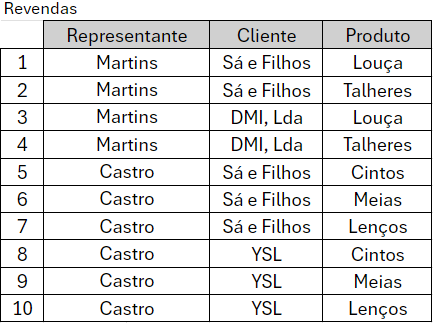
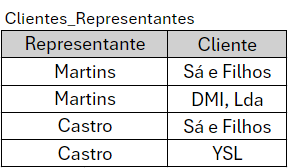
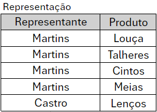
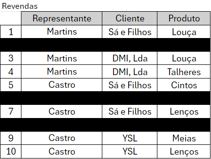
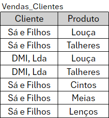

Normalização de Tabela: NF5
A dependência de junção é quando ocorre uma multivalorada, mas não existem todas as combinações e ai é preciso
uma terceira tabela para dizer quais linhas
existem e quais não existem.
"Uma relação R está na 5FN, também chamada de forma normalizada de projeção-junção (PJ/NF) se, e somente se,
toda dependêcia de junção em R for consequencia
de chaves candidatas de R"
Dependências Multivaloradas:
IMAGINE a tabela, Revendas, com os atributos Representante;
Cliente;
e Produto, que está fora da NF4, ou seja, contem dependências multivaloradas

Para estar na NF4, ela não pode conter dependências multivaloradas, como explicado no módulo anterior. Ficando
Assim:


Implementação do NF5
Mas para estar no NF5, imagine que partes dessas dependências multivaloradas estejam
incompletas, formando assim uma
Dependência de Junção

Assim impossibilitando que apenas as tabelas Clientes_Representante e
Representação não consigam mais representar a tabela
Revendas, para resolver isso precisaremos de uma nova tabela, chamada
Vendas_Clientes

E com ela, junta das outras, nós conseguimos representar o primeiro Registro.
Benefícios do 5NF
- Eliminação de Redundâncias: o NF5 ajuda a eliminar redundâncias complexas de dados, garantindo
que cada fato seja armazenado apenas uma vez.
Isso minimiza o desperdício de espaço de armazenamento.
- Integridade dos Dados: Ao segmentar informações em tabelas mais apropriadas e relacionadas, a
NF5 ajuda a manter a integridade referencial,
evitando inconsistências nos dados.
- Flexibilidade: A NF5 permite que a estrutura de dados se adapte melhor a mudanças nos
requisitos do negócio, pois as relações entre os dados
são claramente definidas e mais gerenciáveis.
Em conclusão, a aplicação da NF5 contribui para a criação de um modelo de dados mais robusto e eficiente, promovendo a
consistência e a escalabilidade do banco de dados. No entanto, sua implementação deve ser cuidadosamente avaliada em função
das necessidades específicas do sistema, uma vez que a complexidade adicional pode não ser necessária em todos os casos.
Portanto, a NF5 é uma ferramenta valiosa na busca pela excelência na modelagem de dados, mas deve ser utilizada de maneira
equilibrada e pragmática.
Perguntas sobre NF5